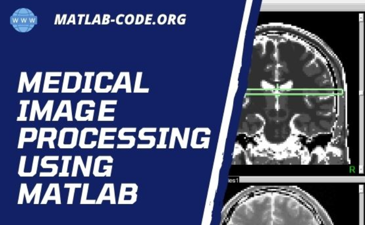

Medical Image Processing
Aug 2018 - April 2019

- Designed and developed a user friendly interface for medical image processing,
allowing users to easily upload, process, and analyze images.
- Collaborated with team members to integrate image processing techniques with GUI
functionality, ensuring seamless user experience.
- Tested and validated the application using various medical image datasets, ensuring
accuracy and reliability.